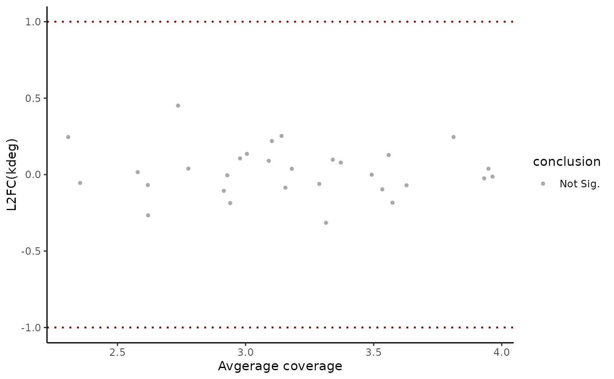

Make a plot of effect size (y-axis) vs. log10(read coverage) (x-axis), coloring points by position relative to user-defined decision cutoffs.
Usage
EZMAPlot(
obj,
parameter = "log_kdeg",
design_factor = NULL,
reference = NULL,
experimental = NULL,
param_name = NULL,
param_function = NULL,
features = NULL,
condition = NULL,
repeatID = NULL,
exactMatch = TRUE,
plotlog2 = TRUE,
FDR_cutoff = 0.05,
difference_cutoff = log(2),
size = NULL,
features_to_highlight = NULL,
highlight_shape = 21,
highlight_size_diff = 1,
highlight_stroke = 0.7,
highlight_fill = NA,
highlight_color = "black"
)Arguments
- obj
An object of class
EZbakRCompare, which is anEZbakRDataobject on which you have runCompareParameters- parameter
Name of parameter whose comparison you want to plot.
- design_factor
Name of factor from
metadfwhose parameter estimates at different factor values you would like to compare.- reference
Name of reference
conditionfactor level value.- experimental
Name of
conditionfactor level value to compare to reference.- param_name
If you want to assess the significance of a single parameter, rather than the comparison of two parameters, specify that one parameter's name here.
- param_function
NOT YET IMPLEMENTED. Will allow you to specify more complicated functions of parameters when hypotheses you need to test are combinations of parameters rather than individual parameters or simple differences in two parameters.
- features
Character vector of feature names for which comparisons were made.
- condition
Defunct parameter that has been replaced with
design_factor. If provided gets passed todesign_factorifdesign_factoris not already specified.- repeatID
If multiple
kineticsorfractionstables exist with the same metadata, then this is the numerical index by which they are distinguished.- exactMatch
If TRUE, then
featuresandpopulationshave to exactly match those for a given fractions table for that table to be used. Means that you can't specify a subset of features or populations by default, since this is TRUE by default.- plotlog2
If TRUE, assume that log(parameter) difference is passed in and that you want to plot log2(parameter) difference.
- FDR_cutoff
False discovery cutoff by which to color points.
- difference_cutoff
Minimum absolute difference cutoff by which to color points.
- size
Size of points, passed to
geom_point()size parameter. If not specified, a point size is automatically chosen.- features_to_highlight
Features you want to highlight in the plot (black circle will be drawn around them). This can either be a data frame with one column per feature type in the comparison table you are visualizing, or a vector of feature names if the relevant comparison table will only have one feature type noted.
- highlight_shape
Shape of points overlayed on highlighted features. Defaults to an open circle
- highlight_size_diff
Sets how much larger should the points overlayed on the highlighted features be than the original plot points.
- highlight_stroke
Stroke width of the points overlayed on the highlighted features.
- highlight_fill
Fill color of the points overlayed on the highlighted features. Default is for them to be fill-less (
highlight_fill == NA).- highlight_color
Color of the points overlayed on the highlighted points.
Value
A ggplot2 object. Y-axis = log2(estimate of interest (e.g., fold-change
in degradation rate constant); X-axis = log10(average normalized read coverage);
points colored by location relative to FDR and effect size cutoffs.
Details
EZMAPlot() accepts as input the output of CompareParameters(), i.e.,
an EZbakRData object with at least one "comparisons" table. It will plot
the "avg_coverage" column in this table vs. the "difference" column.
In the simplest case, "difference" represents a log-fold change in a kinetic
parameter (e.g., kdeg) estimate. More complicated linear model fits and
comparisons can yield different parameter estimates.
NOTE: some outputs of CompareParameters() are not meant for visualization
via an MA plot. For example, when fitting certain interaction models,
some of the parameter estimates may represent average log(kinetic paramter)
in one condition. See discussion of one example of this here.
EZbakR estimates kinetic parameters in EstimateKinetics() and EZDynamics()
on a log-scale. By default, since log2-fold changes are a bit easier to interpret
and more common for these kind of visualizations, EZMAPlot() multiplies
the y-axis value by log2(exp(1)), which is the factor required to convert from
a log to a log2 scale. You can turn this off by setting plotlog2 to FALSE.
Examples
# Simulate data to analyze
simdata <- EZSimulate(30)
# Create EZbakR input
ezbdo <- EZbakRData(simdata$cB, simdata$metadf)
# Estimate Fractions
ezbdo <- EstimateFractions(ezbdo)
#> Estimating mutation rates
#> Summarizing data for feature(s) of interest
#> Averaging out the nucleotide counts for improved efficiency
#> Estimating fractions
#> Processing output
# Estimate Kinetics
ezbdo <- EstimateKinetics(ezbdo)
# Average estimates across replicate
ezbdo <- AverageAndRegularize(ezbdo)
#> Fitting linear model
#> Estimating coverage vs. variance trend
#> Regularizing variance estimates
# Compare parameters across conditions
ezbdo <- CompareParameters(
ezbdo,
design_factor = "treatment",
reference = "treatment1",
experimental = "treatment2"
)
# Make MA plot (ggplot object that you can save and add/modify layers)
EZMAPlot(ezbdo)
